SCIM-to-SCIM Orchestration from PeopleSoft to Idaptive
PeopleSoft applications are used by human resource departments in large corporations, and Idaptive is a cloud platform. An orchestration between these two applications will simplify data transfer and updates. Aquera provides the platform for this orchestration, where PeopleSoft is the source and Idaptive is the target. Before executing the orchestration, user needs to create the source and target applications.
Source Creation
Go to PeopleSoft application from your Aquera Admin page, provide Display Name and Description and click Create 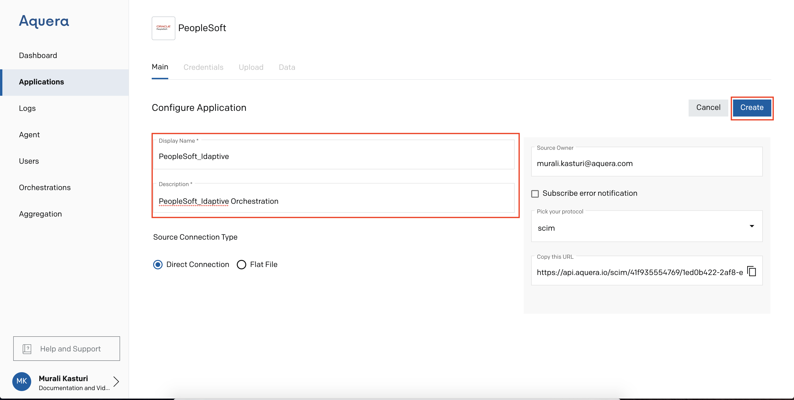
Go to Credentials, add the Username and Password provided by PeopleSoft in the given boxes and click Save Changes 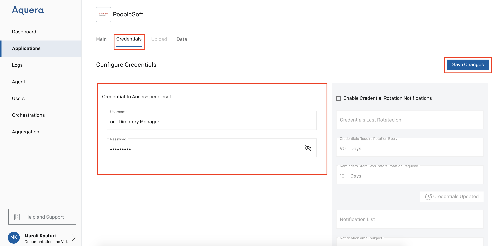
Click Data to check the inputs at the source
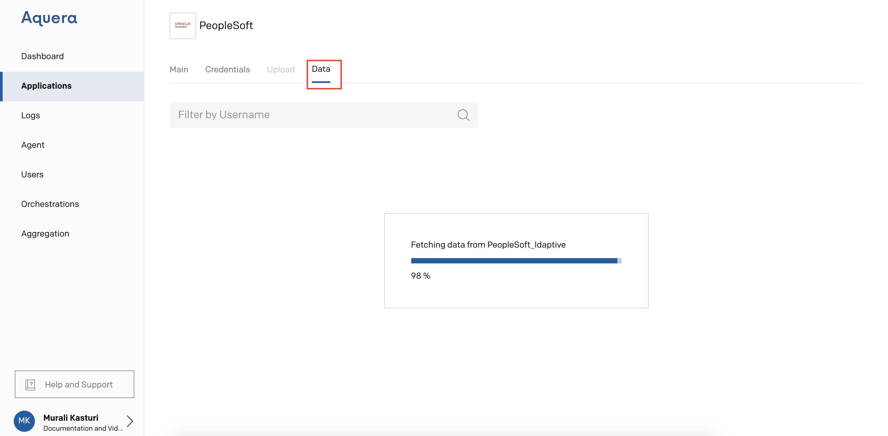
Target Creation
Go to Idaptive application from your Aquera Admin page, provide Display Name and Description
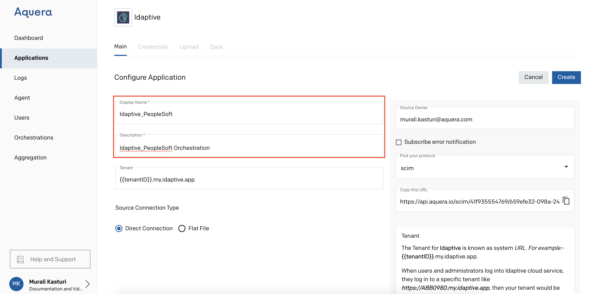
To get the Token, logon to your Idaptive home page by using your credentials. Token can be fetched from the login URL 
Add the Token and click Create 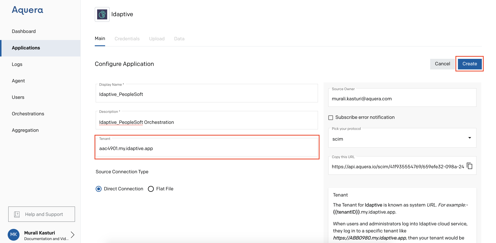
Go to Credentials, provide your username and password for Idaptive and click Save Changes 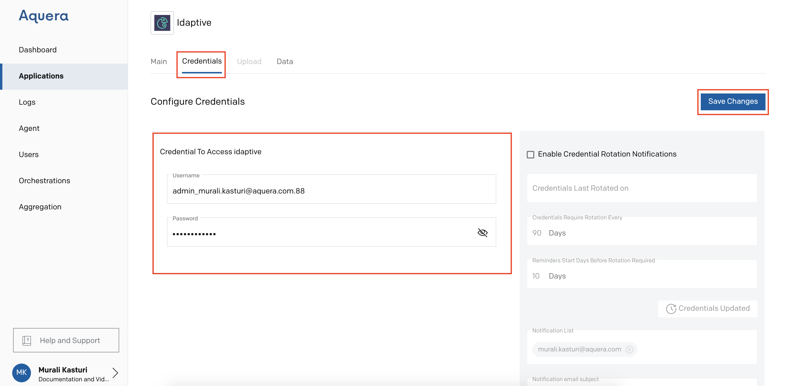
Click Data to check the inputs at the target 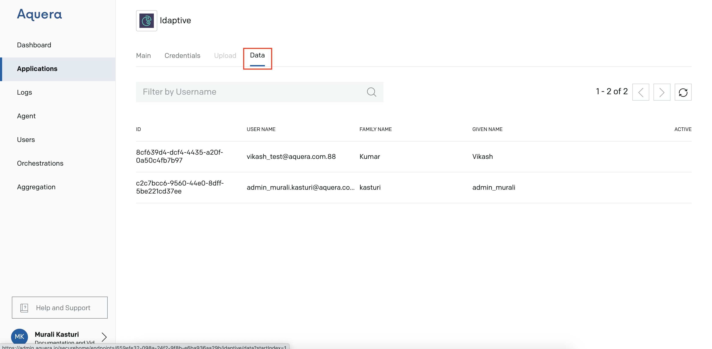
Orchestration
Go to Orchestrations from the Aquera Admin page and click Add Orchestration 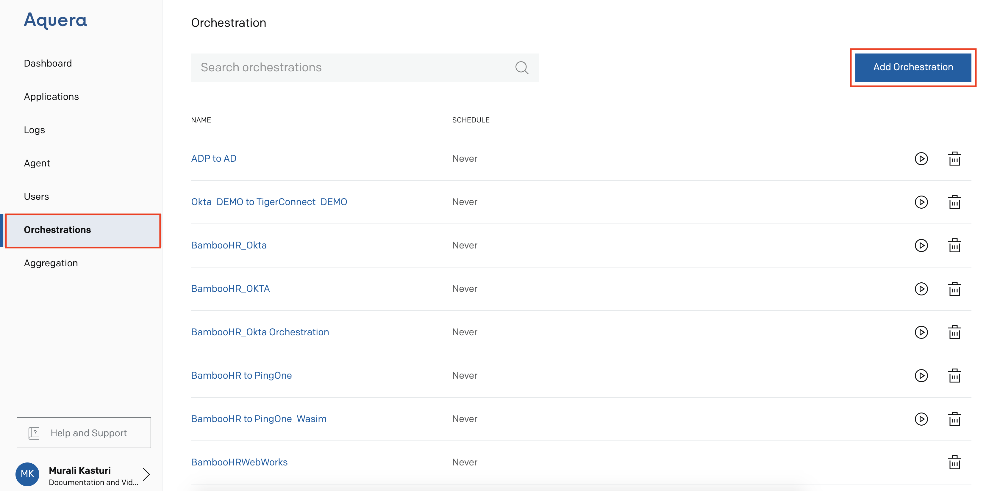
Provide a name to the Orchestration, select SCIM-to-SCIM as orchestration type, select the Source Application and Target Application and click Create
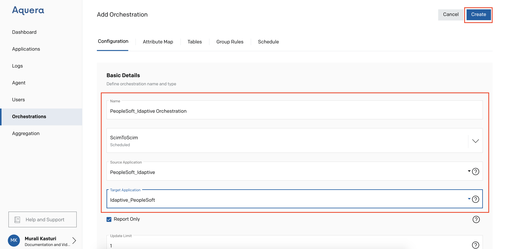
Go to Orchestrations and click Run icon next to the newly created orchestration
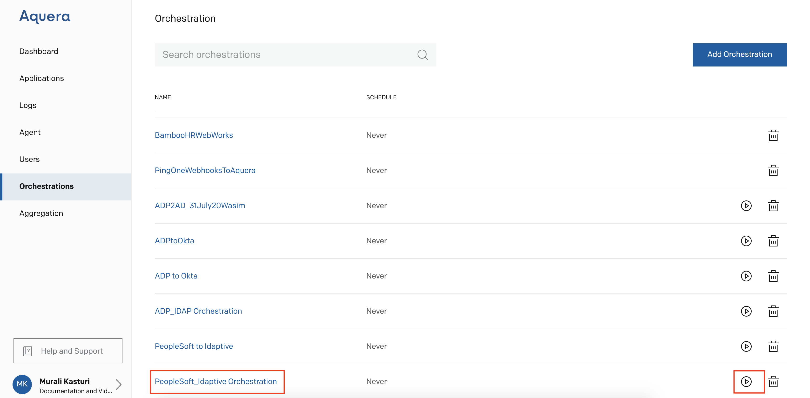
Go to Logs to view the result 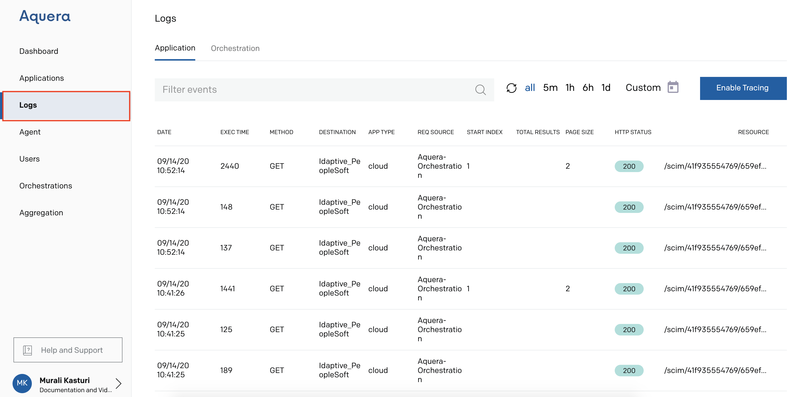
Go to Orchestration, click the Success logs and copy the Source Code 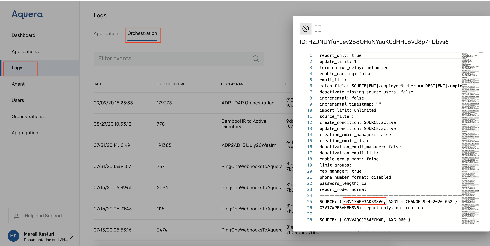
Go to Orchestrations, click Attribute Map, paste the Source Code in the box and click Search Icon
Slide Preview to get the attribute mapping
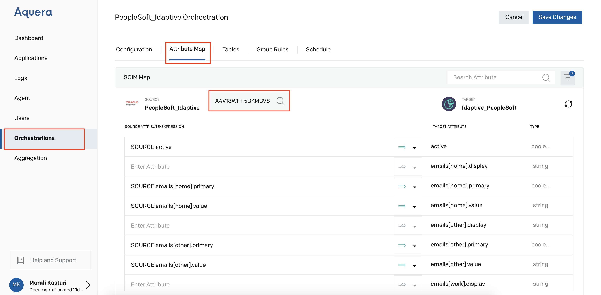